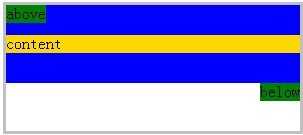
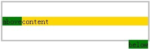
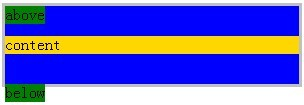
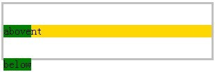
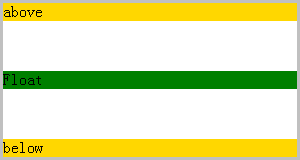
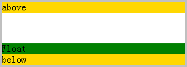

根据规范中的描述，表述 'margin' 折叠意味着两个或多个框（可能相邻也可能嵌套）的相邻的 'margin'（其间没有 'padding' 或 'border' 间隔）重合在一起而形成一个单一的 'margin' 。
在CSS 2.1中，水平 'margin' 永远不折叠
垂直 'margin' 重合有以下几种情况：
注1：BFC 表示创建了block formatting context的框
标准中，没有明确浮动元素和绝对定位元素不在普通流中的元素对普通流中元素外边距折叠的影响。
但是，根据标准中的说法，浮动元素和定位元素不会影响普通流中的元素的定位，就像它们不存在一样。所以，他们是不应该影响普通流中元素毗邻的外边距折叠。
关于 'margin' 折叠的详细信息，请参考 W3C CSS2.1 规范 ：8.3.1 Collapsing margins 中的内容。
关于浮动元素的详细信息，请参考 W3C CSS2.1 规范：W3C CSS 2.1 9.5 Floats 中的内容。
关于绝对定位元素的详细信息，请参考 W3C CSS2.1 规范：9.6 Absolute positioning 中的内容。
IE6 IE7 IE8(Q) 中浮动元素和定位元素某些情况下会影响普通流中毗邻 'margin' 的折叠
严重的情况下会破坏整体布局
| IE6 IE7 IE8(Q) |
|---|
1.1 在 IE 中浮动元素可能阻止毗邻父子 'margin' 的折叠
分析以下代码：
<div style="border:3px solid silver; width:300px;">
<div id="container" style="background-color: blue;">
<div style="float:left; background-color: green;">above</div>
<div id="DIV" style="margin:30px 0; background-color:gold;">content</div>
<div style="float:right; background-color: green;">below</div>
</div>
</div>
根据 CSS2.1 规范中的描述可知，DIV 和 container 会发生 'margin' 折叠。
这段代码在不同的浏览器环境中的表现：
| IE6 IE7 IE8(Q) | IE8(S) Firefox Opera Safari Chrome |
|---|---|
|  |  |
可见，在 IE6 IE7 IE8(Q) 中，浮动元素会阻止普通流中毗邻的父子 'margin' 的折叠。
另外，在 IE6 IE7 IE8(Q) 中，below 浮动元素下出现了奇怪的空白，将最外层的 DIV 元素的高度撑大，而且，这个空白的高度等于 DIV 的 'margin' 的大小，因为本测试关注点是 DIV 和 container 的 'margin' 折叠，所以，不对此现象做分析。
1.2 在 IE 中绝对定位元素可能阻止父子元素相邻 'margin' 的折叠
分析如下代码：
<div style="border:3px solid silver; width:300px;">
<div id="container" style="background-color: blue;">
<div style="position:absolute; background-color: green;">above</div>
<div id="DIV" style="margin:30px 0; background-color:gold;">content</div>
<div style="position:absolute; background-color: green;">below</div>
</div>
</div>
根据 CSS2.1 规范中的描述可知，DIV 和 container 会发生 'margin' 折叠。
这段代码在不同的浏览器环境中的表现：
| IE6 IE7 IE8(Q) | IE8(S) Firefox Opera Safari Chrome |
|---|---|
|  |  |
在 IE6 IE7(Q) IE8(Q) 中，浮动元素可能会阻止普通流中毗邻 'margin' 的折叠。
分析如下代码：
<div style="border:3px solid silver; width:300px;">
<div id="DIV1" style="margin-bottom:50px; background-color:gold;">above</div>
<div id="Float" style="float:left; background-color: green; width:100%;">Float</div>
<div id="DIV2" style="margin-top:50px; background-color:gold;">below</div>
</div>
根据 W3C 标准，DIV1 和 DIV2 应该发生 'margin' 折叠，因为它们会认为不在普通流中的 Float 不存在。
这段代码在不同的浏览器环境中的表现(忽略 IE 中的盒模型 bug)：
| IE6 IE7(Q) IE8(Q) | IE7(S) IE8(S) Firefox Opera Safari Chrome |
|---|---|
|  |  |
可见，在 IE6 IE7(Q) IE8(Q) 中， 'margin' 毗邻的兄弟节点之间的浮动元素可能会阻止它们的 'margin' 折叠。
1. 根据具体需求，调整 'margin' 的位置和大小；
2. 使用 CSS hack 设置 IE 中的 'margin' 大小，以避免 IE 跟其他浏览器的布局差异。
| 操作系统版本: | Windows 7 Ultimate build 7600 |
|---|---|
| 浏览器版本: |
IE6 IE7 IE8 Firefox 3.6.6 Chrome 6.0.447.0 dev Safari 5.0 Opera 10.60 |
| 测试页面: |
parent_sub_affected_by_floats.html parent_sub_affected_by_absolutly_positioned_element.html siblings_affected_by_floats.html |
| 本文更新时间: | 2010-07-22 |
margin collapse float absolute position